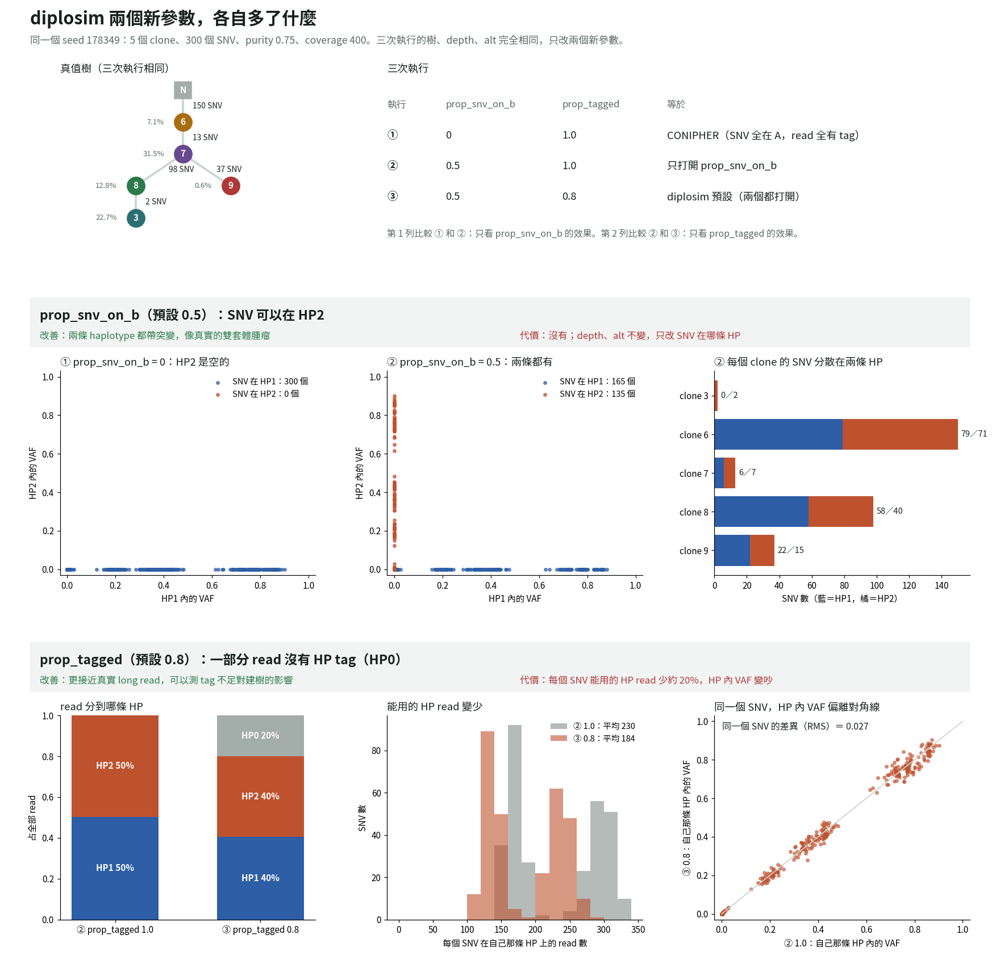
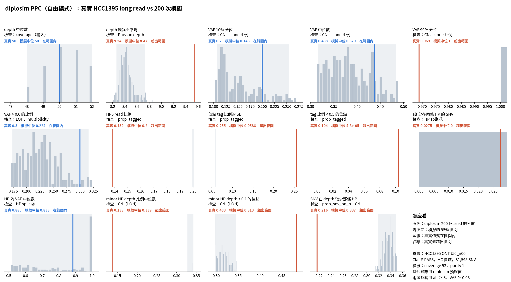
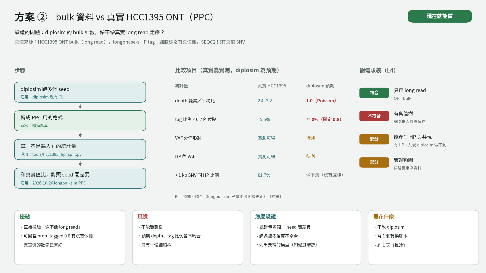

10-29 決定把 longbulksim 凍結、改用 Rust 照 CONIPHER 一步一步重寫。昨天還有幾個 CONIPHER 參數和 HP 設計沒定。這些都要先定下來，才能寫程式。寫完之後，要用一棵隨機樹展示：新參數到底多了什麼資訊？
minimum_branch_length、coverage、purity 上下限、fract_noise、n_noise_clones 照搬；noise_type 不加。copy number 的子問題（WGD 時間等）先暫緩，先做 HP1／HP2。prop_snv_on_b（SNV 落在 HP2 的機率，預設 0.5）和 prop_tagged（read 有 HP tag 的機率，預設 0.8）。其他步驟照搬 CONIPHER。cargo test --release 14 個測試全過。實作 agent 回報：prop_snv_on_b = 0 時，5 種設定各跑 200 seed，平均值和 CONIPHER 都在 |z| < 2 以內。
diplosim 現在可以向老師逐步說明「沿用 CONIPHER 哪個函式、新寫了哪兩件事」。HP 欄位是附加在 CONIPHER 計數上，不改動原本的樹與計數，所以和 CONIPHER 有乾淨的對照組。下一步是驗證它產生的資料像不像真的（見下一項）。
和 CONIPHER 只比了平均值，沒比完整分佈形狀；比較腳本還在 scratchpad，沒搬進 tools/。prop_tagged = 0.8 是暫定值，沒有資料來源。方案 ② 沒有同一條 read 上的共現。copy number 的子問題（WGD 時間、mutloss_truncal、constant_multiplicity、n_subclonal_wgd）全部暫緩。demo 只看一個 seed，其中 clone 9 只占 0.6%。
diplosim/src/hp.rsdiplosim/src/evolution.rsdiplosim/src/sequencing.rsdiplosim/tests/behaviour.rsdiplosim/docs/porting_map.mddiplosim/DECISIONS.mdtools/draw_diplosim_hp_split_options.pytools/plot_diplosim_demo.py./diplosim/target/release/diplosim --n-clones 5 --n-snv 300 --seed 178349 --out lab_report/2026-10-30_diplosim_demo/runcargo test --release --offlinelab_report/2026-10-30_diplosim_demo/README.mdlab_report/2026-10-30_diplosim_demo/diplosim_demo.pngdiplosim/docs/figs/hp_split_compare.pngcommit 877b75110-28 會議要求說明模擬器怎麼驗證。diplosim 用預設參數產生的 bulk 計數，像不像真實的 long read bulk？HCC1395 沒有已知的 clone tree，所以這裡只驗證定序資料，不驗證樹。
t50_n00（purity 1，depth 約 53），已用 longphase 做 haplotag。1. tag 比例（3 項）：真實 HP0 是 0.139，模擬固定 0.200；位點間 tag 比例的 SD 真實 0.255、模擬 0.059。 2. 沒有定序誤差（2 項）：真實有 2.8% 的 SNV 的 alt 分在兩條 HP，模擬是 0；VAF 90% 分位真實 0.969、模擬 1.0。 3. CN 組成（4 項）：minor HP depth < 0.1 的位點，真實 48%、模擬 31%。HCC1395 的 LOH 比隨機抽到的多。

前兩類是 diplosim 自己的設計問題：每條 read 用同一個機率決定 tag、alt 只進 SNV 所在的 HP。第三類可能只是 HCC1395 和隨機 CN 不同，自由模式分不開。所以下一步要做「固定 CN 模式」：把真實 CN 餵給 diplosim，才能判斷 HP 拆分公式本身對不對。
只有一株細胞株、一個 purity。偵測門檻只模仿 ClairS 的最低值，沒有模擬低 alt 時的靈敏度。tag 用的 germline het SNP 和 HC 區域仍來自 SEQC2。沒有 read，所以比不了同一條 read 上的共現。chr6／16／X 那 8 萬個 call 的原因（normal 細胞株 LOH）只是推論。
tools/diplosim_ppc_hcc1395.pytools/plot_diplosim_ppc_hcc1395.pypython3 -I tools/diplosim_ppc_hcc1395.py real lab_report/2026-10-30_diplosim_ppc_hcc1395 lab_report/2026-10-30_diplosim_ppc_hcc1395/tables/clairs_hc_sites.tsvpython3 -I tools/diplosim_ppc_hcc1395.py sim lab_report/2026-10-30_diplosim_ppc_hcc1395 200python3 -I tools/diplosim_ppc_hcc1395.py compare lab_report/2026-10-30_diplosim_ppc_hcc1395lab_report/2026-10-30_diplosim_ppc_hcc1395/README.mdlab_report/2026-10-30_diplosim_ppc_hcc1395/tables/ppc_stats.tsvlab_report/2026-10-30_diplosim_ppc_hcc1395/diplosim_ppc_hcc1395.png10-28 會議的待辦是「探討兩到三種驗證方法」。diplosim 的真值樹和模擬 bulk，要拿什麼資料證明它像真實腫瘤？
/big8_disk 上有沒有完整的 HG008 資料。/big8_disk/yungjen114/data/HG008/ 有 3.3 TB 的 HG008 bulk long read（ONT 63×、ONT-UL 54×、PacBio 116×）和 6 組混樣。README 寫明 single cell WGS 和 8 株 clone 沒有下載。
沒有一個資料來源同時滿足「long read、有真值樹、有 HP」三條需求，所以只能分層驗證。④ 和 ⑤ 的真值是做出來的，不必相信推論的樹，比 ③ 可靠。這 4 條路徑可以直接當成 11/4 報告「驗證方法候選」那一段。
④ 和 ⑤ 都還沒做。⑤ 的 8 株 clone BAM 已在 10-29 刪除，大小沒查。HG008 是同學 yungjen114 的資料，要用之前要先告知。
tools/draw_diplosim_validation_options.pydiplosim/docs/figs/validation_option_1.pngdiplosim/docs/figs/validation_option_2.pngdiplosim/docs/figs/validation_option_3.png驗證方案列出來之後，使用者對其中兩個提出質疑：拿 short read 的 TRACERx 統計當參考範圍合理嗎？HG008 single cell 那棵樹真的只有三群 clone 嗎？
hg008_sc_tree_check 分群結果，重算每一群的細胞數。pyclone.py:300-304）有沒有 HP。diplosim/DECISIONS.md，之後連參考範圍也不用 short read。驗證參考從此只剩 long read。只照三群模擬再和真實 bulk 比，3E4、{2D6,2E6} 的 SNV 會變成模擬沒有的東西，比較會失真。所以方案 ③ 暫停，改找真值不靠推論的路徑（④ 混樣、⑤ clone 株混樣）。另外，10-29 判定「不再需要 HG008 資料」；今天發現同學已有 HG008 bulk，HG008 又回到候選，但 single cell 仍不在本機。
「short read 統計能不能當參考」這條規則，會議紀錄沒有寫清楚，還沒問老師。HG008 那約 47 顆分不出群的細胞怎麼處理，沒有決定。
diplosim/DECISIONS.mdtools/draw_diplosim_validation_options.pydiplosim/docs/figs/validation_option_3.png使用者要在一個網頁上看懂 diplosim：哪些參數是從 CONIPHER 搬來的、哪些是新增的，模擬出來長什麼樣，又是怎麼驗證的。
網頁發布到 version 28。驗證流程頁有 6 張圖：每條染色體的 ClairS call 數（標出 chr6／16／X 約 8 萬個可疑 call）、一個真實位點 24 條 read 的 HP 分配、235 格 seed（35 格因重複位置跳過）、偵測門檻散點圖、14 個統計量分組、兩個實際的判定例子。三個決策點畫成分叉：選的方案實線框，沒選的虛線框加排除理由。
這個網頁可以直接拿來向老師說明 diplosim 的參數來源與驗證步驟，對應 10-28 會議「具體展示怎麼驗證」的要求。
預覽工具不支援 CSS 顏色，顏色和深色模式沒有實際檢查。網頁原始檔只在 scratchpad（conipher_params.html），沒有存進 repo。
https://claude.ai/artifact/Vz6RXnh1AUPsQpomkoMVKZ10-29 把 CLAUDE.md 的工作流程畫成泳道圖。使用者讀圖時發現幾列的名稱看不出在做什麼，例如「評估資料／工具」指的是什麼。
圖變成 7 列，例子如「HG008 能當驗證嗎」「CONIPHER 能沿用嗎」「10-28 會後改規則」。發布到 artifact version 11。
流程圖現在能讓人看出不同工作會走不同流程，可以放進報告說明「AI 工作流程怎麼依會議回饋修改」。
第 2 列標題「改設計」要不要換、「benchmark 寫 4 項」要不要改寫，都還沒處理。本機預覽沒有中文字型，字的實際長度沒確認。全部沒有 commit。
tools/draw_claude_md_workflow.pyreport/claude_md_workflow/claude_md_workflow.svgreport/claude_md_workflow/index.htmlhttps://claude.ai/artifact/5MYD7StspcUTsqKaUFRgfU10-29 23:00–23:04 用 daily-log 寫 10-29 的日誌。候選 9 項，呈現 5 項（diplosim 參數 13 條決策、CLAUDE.md 流程改寫、[翻案] longbulksim 凍結改寫 diplosim、research/ 清 58 檔、phyclone_rs 搬進 haploclone），記錄 4 項。產出 daily/.data/2026-10-29.json 與 daily/2026-10-29.html，游標推進到 2026-10-29T23:00:10。兩個記錄層標題被判定看不出動作對象，修改指令被擋，沒改；5 筆引文命中 2–3 處，放行。日誌沒有 commit、沒有 push。
daily/.data/2026-10-29.jsondaily/2026-10-29.htmlbash /home/boyu114/.claude/skills/daily-log/scripts/collect_day.sh --commit為什麼：HCC1395 PPC 的自由模式分不開「CN 抽得不像」和「HP 拆分公式不對」，使用者選做方案 B，把真實 CN 餵給 diplosim。做了什麼：先排除 SEQC2 的 21 份 ASCAT（Illumina short read，違反只用 long read）。本機找到兩份 long read CN：ivan115 的 Wakhan（HKU t50_n00 ploidy 2.73／purity 0.95；NYGC 第 1 名解 ploidy 1.55 要手動選第 2 名），vicky115 的 PURPLE v4.4（HCC1395D_08 ploidy 2.84、HCC1395_08 fac02 ploidy 2.88，預設 base 估成 1.46，只有 t10–t40）。指出循環論證：用同一份 read 推 CN 再比 minor HP depth，那一項必然吻合。使用者問 ASCAT 是否涵蓋最齊：不是，PCAWG 共識 CN 沒有 ASCAT（本機欄位），TCGA 主要是 SNP6。再深挖找到使用者自己 2026-08 在 HCC1395 5kHz long read 上跑過 ASCAT 3.2.0（commit f489437 的 data.md，rho_ASCAT 0.99），但結果目錄 /bip8_disk/boyu114/multi_evol_tree 與腳本都已不在，alleleCounter 也不在 PATH。結果：使用者選 ⑤ 重跑 ASCAT，跑在 5kHz read 上（不跑 t50_n00，避開循環），設定照 8 月（hg38、min_base_qual 10、alleleCounter -f 0），輸出到 /big8_disk/boyu114/hcc1395_ascat_5khz/。狀態：22:58 開始從 zenodo 14008443 下載 G1000 loci／alleles 與 GC／RT 參考檔並安裝 alleleCounter，尚未開跑；5kHz 與 t50_n00 的 read 是否重疊還沒核對；用同學的 Wakhan／PURPLE 前要先告知。
/big8_disk/boyu114/hcc1395_ascat_5khz/ref/